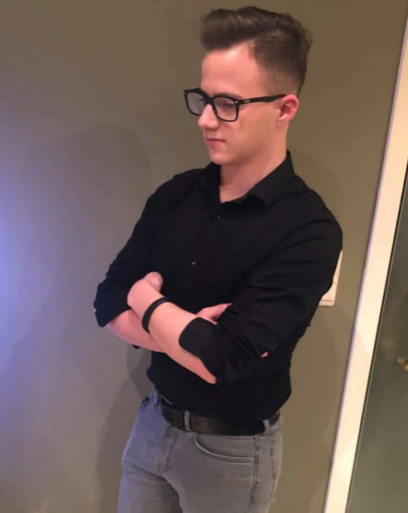
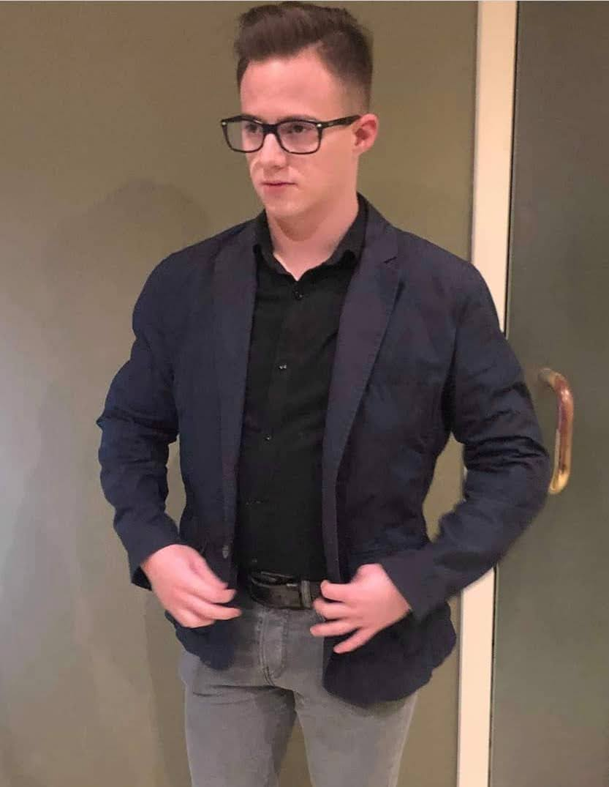

Over mij
Ik ben een 21-jarige student aan Hogeschool PXL. Mijn afstudeerrichting is “Systeem – en netwerkbeheer”. Zowel systeem-
als netwerkbeheer zijn een kolfje naar mijn hand. Bij het horen van deze woorden sta ik te popelen om aan een project te
werken. Ook het security-aspect spreekt me erg hard aan.
Ik bijt mezelf vast in een uitdaging en probeer deze met succes te voltooien. Hierbij komt wel aan bod dat ik een beetje
perfectionistisch en plichtsbewust ben. Dit is natuurlijk geen enkel probleem want ik sta honderd procent achter
kwalitatieve projecten. Een project moet namelijk zorgvuldig en netjes aan de klant bezorgd worden.
Een volgend typerende karaktereigenschap is mijn structurele aanpak in groepswerk. Door het werken in groep kan je de
juiste stappen ondernemen om een project tot een goed einde te brengen.
Vervolgens ben ik ook gedreven en experimenteel gericht. In mijn vrije tijd ben ik dagdagelijks bezig met het opzoeken
van IT-gerelateerde onderwerpen (vooral rond het security-aspect) en probeer ik zo nieuwe technologieën te ontdekken.